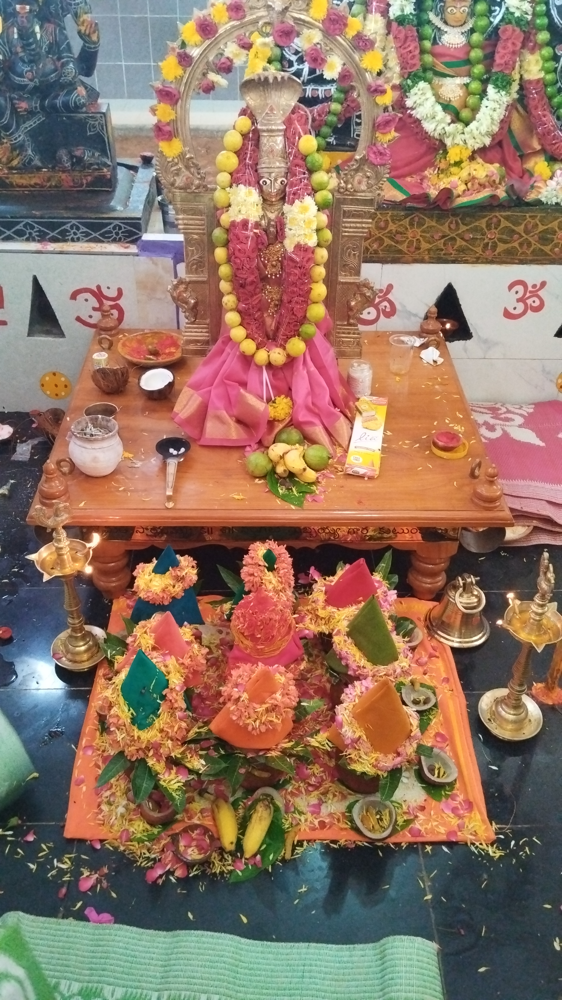

Union minister Smritis Irani, conducted a Jan Samwad in Amethi on Monday as
part of a four-day visit to her parliamentary constituency where she
listened to people's grievances. Union minister of women and child
development Smriti Irani holds Jan Samwad in Amethi on Monday.(ANI ) Union
minister of women and child development Smriti Irani holds Jan Samwad in
Amethi on Monday.

